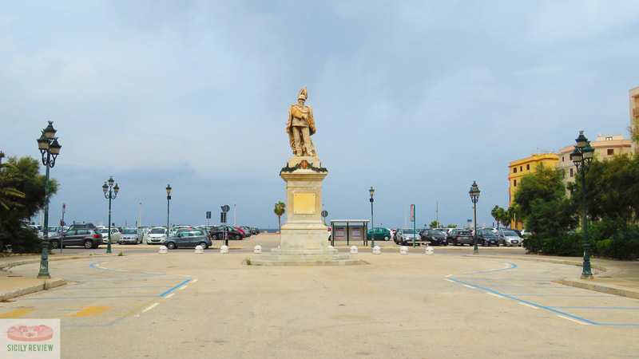
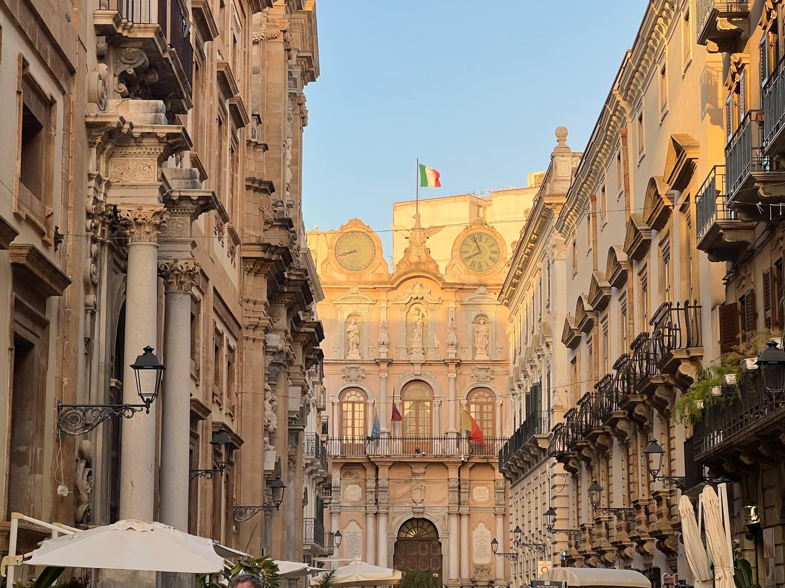

Piazza V. Emanuele
 Trapani
Trapani

Trapani è una città nella Sicilia occidentale con una costa a mezzaluna. Nella punta occidentale, con vista sulle Isole Egadi, si trova la torre di guardia Torre di Ligny, risalente al XVII secolo, che al suo interno ospita il Museo della Preistoria e di Archeologia Marina. A nord del porto, la Chiesa del Purgatorio conserva sculture in legno che sfilano attraverso la città durante la Processione dei Misteri a Pasqua.
Trapani ha sviluppato nel tempo una fiorente attività economica legata all'estrazione e al commercio del sale, giovandosi della sua posizione naturale, proiettata sul Mediterraneo, e del suo porto, antico sbocco commerciale per Eryx (l'odierna Erice), sita sul monte omonimo che la sovrasta. L'economia oggi si basa sul terziario, sulla pesca (anticamente quella del tonno rosso, con la mattanza), sull'estrazione ed esportazione del marmo, sulle attività legate al commercio e (ancora oggi) sulla produzione di sale nelle famose saline, che sono anche riserva del WWF. Ruolo importante è oramai ricoperto dal turismo, concentrato sul centro storico, le spiagge cittadine e delle località della provincia, le tradizioni culturali e il patrimonio paesaggistico.

Trapani